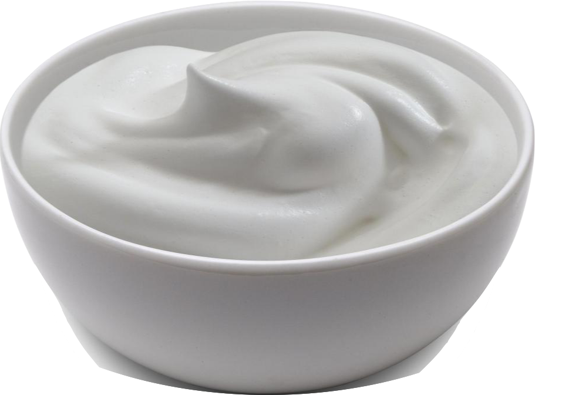

Greek Yogurt

Makes about 4 cups
Ingredients
- 4 cups of Whole Milk
- Greek yogurt starter or 1 Tbsp previous greek yogurt to be used as a starter
- A yogurt maker is preferred but not necessary
- cheese cloth (if not using a yogurt maker)
Directions
- In a large pot, warm milk to ~190°F for 10 minutes
- Allow the milk to cool to about 110°F
- Stir in your starter
Using a yogurt maker
- Sanitize your jars and drainers in boiling water for 1 minute
- Transfer your warmed milk with starter into a sanitized jar and insert into the yogurt maker
- Start the yogurt maker with the greek yogurt setting to incubate the jar at 95°F for 10 hours
- Once the incubation is over pour the yogurt into the strainer to drain the whey off into the 2nd jar for 8 hours
- once strained transfer the yogurt to jars
- Add honey, vanilla extract and sugar, or fruit preserves to make it more tasty
- Remember to save a tablespoon of plain yogurt as a starter for your next batch
Without a Yogurt Maker
- Sanitize the Cheesecloth by suspending it over boiling water for 5 minutes
- Move the pot of cooked milk into the oven for 10 hours and keep it at about 95°F
- Transfer yogurt to a cheese cloth and suspend over a collection bowl to drain the whey from the yogurt
- Transfer the thickened yogurt to jars
- Add honey, vanilla extract and sugar, or fruit preserves to make it more tasty
- Remember to save a tablespoon of plain yogurt as a starter for your next batch
Home